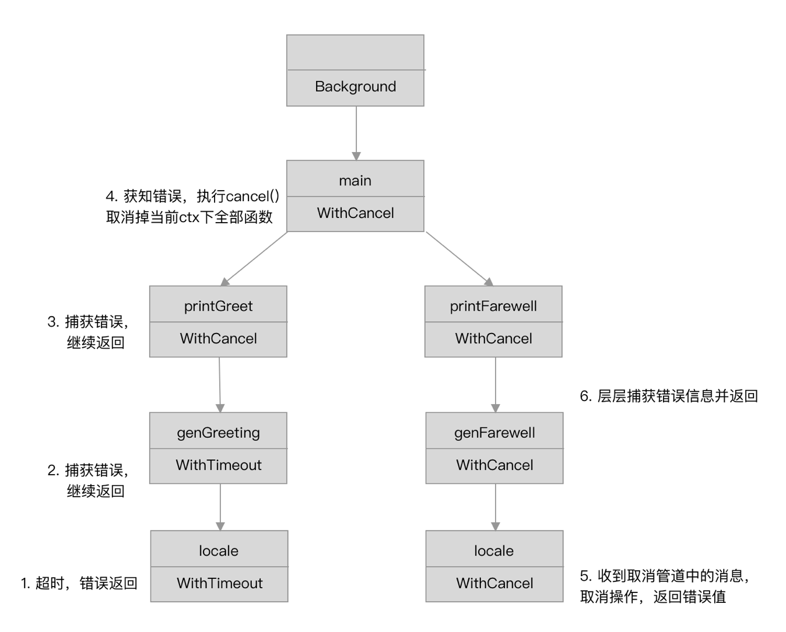

本篇仅涉及如何使用 Context ，不包含源码分析
编程准则
- 不要将
Context存储在结构体中，而是要将其进行显式传递，参数命名约定为ctx
1 | func DoSomething(ctx context.Context, arg Arg) error { |
- 不要传递值为
nil的Context，使用context.TODO - 不要使用
Context来传递函数参数
Context 希望解决的问题
- A goroutine’s parent may want to cancel it.
- A goroutine may want to cancel its children.
- Any blocking operations within a goroutine need to be preemptable（可抢占）so that it may be canceled
官方库提供的Context
提供的接口
1 | var Canceled = errors.New("context canceled") |
Context接口实现
1 | type emptyCtx int |
实例代码
cancelCtx例子
设想一个场景，一个goroutine下有多个子goroutine，如果一个子goroutine出现错误问题，希望将所有还在运行的子goroutine立刻全部返回。
代码如下，将它们放在同一个context下。
1 | package main |
输出如下
1 | [worker 4] got job: 4s |
timerCtx 例子
和上面相同的场景，我希望所有的worker必须在1s以内完成任务，超时的worker直接退出不同干了，那么代码如下
1 | package main |
输出结果如下
1 | [worker 0] got job: 0s |
另外的一个例子来自 sohamkamani/blog-example-go-context-cancellation，将 Context 与Golang的http库结合起来用，设置超时时间
1 | package main |
Context继承
例子来自《Concurrency in Go》
1 | package main |
输出为
1 | cannot print greeting: context deadline exceeded |
